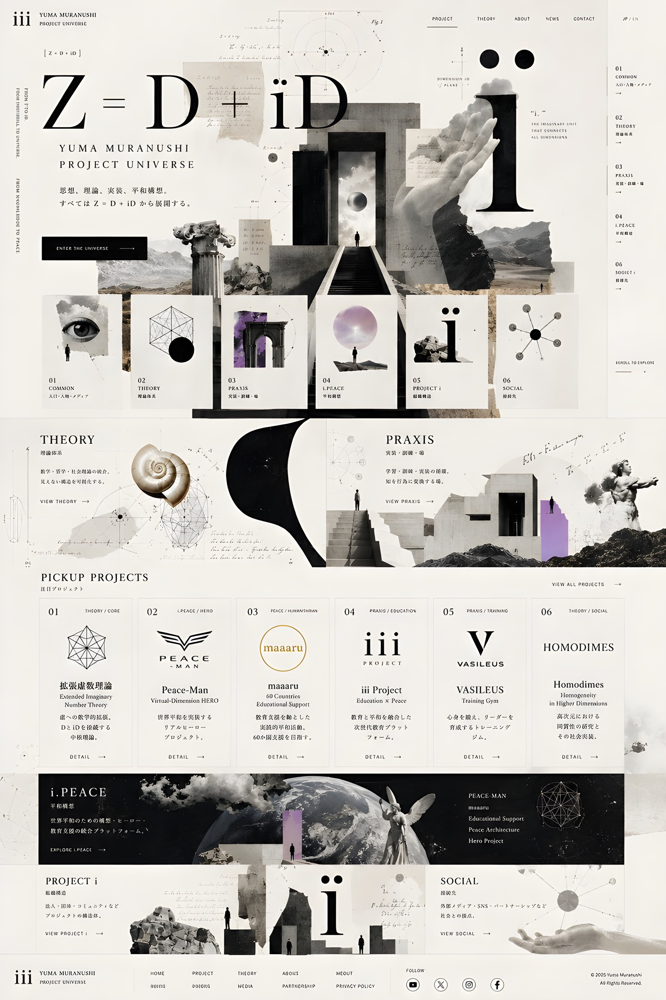

ホーム Project Theory About News Contact 01 COMMON 入口・人物・メディア 02 THEORY 理論体系 03 PRAXIS 実装・訓練・場 04 i.PEACE 平和構想 05 PROJECT i 組織構造 06 SOCIAL 接続先 ENTER THE UNIVERSE 01 COMMON 02 THEORY 03 PRAXIS 04 i.PEACE 05 PROJECT i 06 SOCIAL THEORY 理論体系 PRAXIS 実装・訓練・場 VIEW ALL PROJECTS 01 拡張虚数理論 Extended Imaginary Number Theory 02 Peace-Man 03 maaaru 04 iii Project 05 VASILEUS（URL要確認） 06 Homodimes EXPLORE i.PEACE PROJECT i 組織構造 SOCIAL 接続先 ホーム